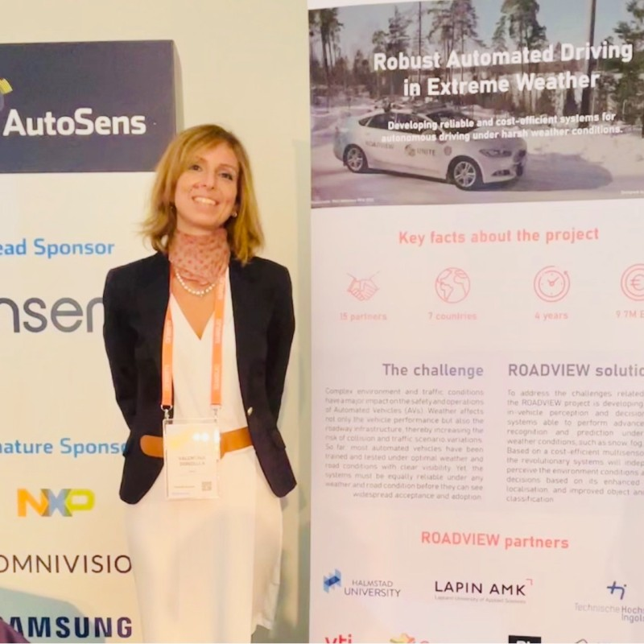
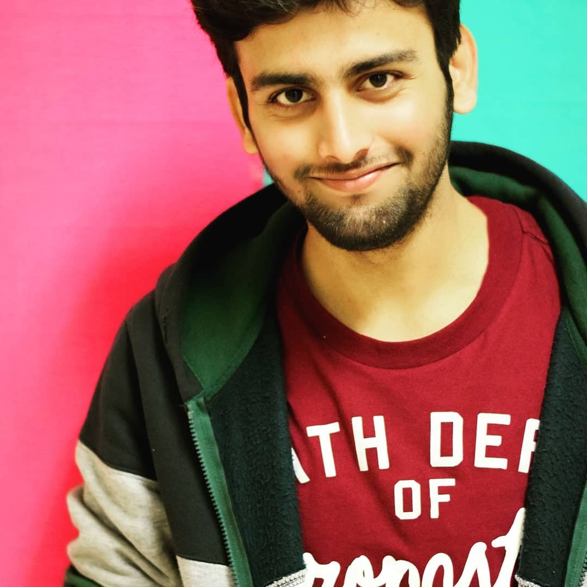
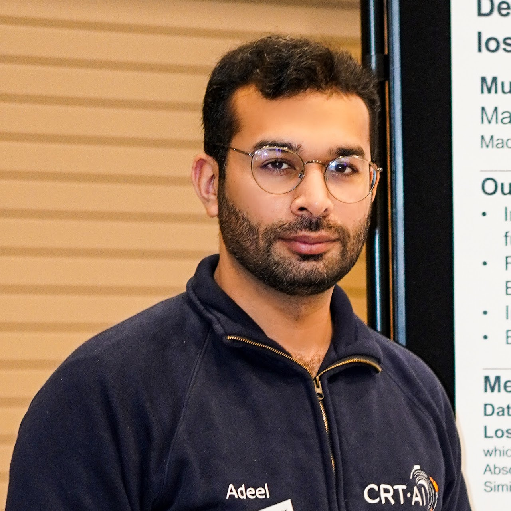

<!DOCTYPE html>
<html lang="en">

<head>
  <meta charset="UTF-8" />
  <meta name="viewport" content="width=device-width, initial-scale=1.0" />
  <title>AI Robust Perception</title>
  <link rel="shortcut icon" href="https://sidcupfamilygolf.com/wp-content/themes/puttosaurus/favicons/favicon-32x32.png"
    type="image/x-icon" />
  <link href="https://cdn.jsdelivr.net/npm/remixicon@3.4.0/fonts/remixicon.css" rel="stylesheet" />
  <link rel="stylesheet" href="style.css" />
</head>

<body>
  <div id="nav">
    
    <a href="#page1">
      <h4>Home</h4>
    </a>
    <a href="#about-us">
      <h4>About</h4>
    </a>
    <a href="#call-for-papers">
      <h4>Call for Papers</h4>
    </a>
    <a href="#page3">
      <h4>Schedule</h4>
    </a>
    <a href="#page4">
      <h4>Organizers</h4>
    </a>
    <a href="#footer">
      <h4>Contact</h4>
    </a>
  </div>
  <div id="cursor"></div>
  <div id="cursor-blur"></div>

  <video autoplay loop muted playsinline src="./Assests/scene5.mp4"></video>
  <div id="main">
    <div id="page1">
      <h1>AI4RobustPerception</h1>
      <h2> Advancing Robust Autonomous Driving through Out-of-Distribution Detection,<br> Multimodal Perception, and
        Foundation Models</h2>
      <p>
        In Conjunction with the 35th International Joint Conference on Artificial Intelligence IJCAI-ECAI 2026
      </p>
      <p class="date-location">
        August 15-17, 2026 | Bremen, Germany
      </p>
      <div class="hero-buttons">
        <button class="btn-highlight">Half Day Workshop</button>
        <button class="btn-highlight">In-Person</button>
        <button class="btn-highlight">1st Edition</button>
      </div>

    </div>
    <div id="page2">
      <div id="scroller">


      </div>
      <div id="about-us">

        <div id="about-us-in">
          <h3>ABOUT WORKSHOP</h3>
          <p>
            AI-based perception for autonomous driving is an important topic in both
            academia and industry as it sits at the boundary between state-of-the-art learning methods and
            safety-critical real-world deployment. This workshop aims to bring together work on making
            perception more reliable under real conditions including robustness towards anomalies, out-ofdistribution
            (OOD) situations, stronger 3D perception including bird’s eye view (BEV) projection
            and depth estimation, and evaluation practices that better reflect safety and deployment needs.
            We also welcome work on multimodal perception and sensor fusion (e.g., camera/LiDAR/radar), and
            recent directions such as foundation models and vision-language models for autonomous driving
            perception. The theme fits well within IJCAI/ECAI’s scope by connecting core AI challenges
            (generalization, uncertainty, robustness, scalable learning, and evaluation) with a high impact
            application domain where these challenges are clearly visible.
            Autonomous driving is also a context where perception models can look strong on
            benchmark test sets but still show reliability problems after deployment. Performance can drop
            with changes in location, weather, lighting, traffic patterns, sensor noise, partial sensor failure, or
            calibration and rig changes. These issues are strongly related to safety, because failure often comes
            from distribution shifts, long-tail events, and poorly captured corner cases rather than average
            conditions. As a result, progress in this area needs not only new models, but also clearer problem
            definitions, better test approaches, and more informative metrics.
            We invite contributions across a broad range of perception tasks and settings, including robust
            detection, tracking, segmentation, occupancy and mapping, OOD/anomaly detection and openworld perception,
            3D perception and BEV-centric methods, depth estimation and depth completion
            for driving, and learning methods that improve robustness such as self-supervision, test-time
            adaptation, and data-centric pipelines (including synthetic data and targeted long-tail collection).
            We also encourage work on rig invariance, sensor fusion, calibration and drift, and practical
            deployment monitoring, because these are common sources of real-world performance drops that
            are often underexplored in academic evaluations. Overall, the workshop aims to connect these
            research directions into a shared discussion on how to build and evaluate perception systems for
            real driving conditions, aligning with IJCAI/ECAI’s focus on core AI questions.
          </p>
        </div>

      </div>
      <div id="call-for-papers">

        <h2>CALL FOR PAPERS</h2>

        <p class="cfp-intro">
          We invite submissions on research related to AI methods for robust
          perception in autonomous driving systems. The workshop aims to bring
          together researchers and practitioners working on reliable perception
          under real-world conditions.
        </p>


        <div class="cfp-grid">

          <div class="cfp-box">

            <h3>Workshop Topics</h3>

            <ul>
              <li>Multimodal Perception & Sensor Fusion</li>
              <li>Out-of-Distribution (OOD), Domain Adaptation, and Obstacle Detection in Autonomous Vehicles (AVs)</li>
              <li>3D & Bird’s Eye View Perception in AVs</li>
              <li>Foundation Models for Driving Perception</li>
              <li>Vision Language Models in Autonomous Vehicles</li>
              <li>Safety Validation Metrics & Evaluation Protocols</li>
              <li>Rig Invariance, Calibration, and Real-World Deployment Drift</li>
              <li>New Datasets & Metrics for Autonomous Driving</li>
              <li>Depth Estimation (Robustness, Corruptions & Adverse Weather/Lighting)</li>
              <li>Driver Monitoring Systems</li>
            </ul>

          </div>


          <div class="cfp-box">

            <h3>Submission Guidelines</h3>

            <ul>
              <li>Submissions should be in PDF format following the official Author Guidelines.</li>
              <li>Submissions must be original, unpublished work with no concurrent submissions.</li>
              <li>Papers should be anonymized for double-blind review.</li>
              <li>Optional supplementary materials (videos, images, code) are allowed.</li>
              <li>Accepted papers will be presented as oral, spotlight, or poster presentations.</li>
            </ul>

            <a class="cfp-button" href="http://ijcai.org/authors_kit" target="_blank">
              View IJCAI Author Guidelines
            </a>

          </div>
          <div class="cfp-box">

            <h3>Important Dates</h3>

            <ul>
              <li>14 May 2026 — Abstract Submission</li>
              <li>16 May 2026 — Full Paper Submission</li>
              <li>5 June 2026 — Acceptance / Rejection Notification</li>
              <li>25 June 2026 — Camera Ready Paper</li>
              <li>26 June 2026 — Payment Confirmation Deadline</li>
              <li>16 August 2026 — Workshop Date</li>
            </ul>

          </div>
        </div>

      </div>

      <div id="page3">

        <h2 class="section-title">Workshop Schedule</h2>

        <div class="schedule">
          <p>
            09:00 – 09:10 Opening Remarks<br>
            09:10 – 09:50 Keynote Talk 1<br>
            09:50 – 10:30 Oral Session 1 (2 Oral Presentations)<br>
            10:30 – 11:00 Coffee Break & Poster Session<br>
            11:00 – 11:40 Keynote Talk 2<br>
            11:40 – 12:20 Oral Session 2 (2 Oral Presentations)<br>
            12:20 – 12:30 Closing Remarks<br>
          </p>
        </div>

        
        
      </div>

      <div id="page4">
        <h1>Organizers</h1>
        
        <div id="organizers-cards">
          <div class="organizer-card">
            <div class="img-wrapper">
              
            </div>
            <div class="card-info">
              <h3>Prof Michael Madden</h3>
              <p class="role">Organizer</p>
              <p class="univ">University of Galway</p>
            </div>
          </div>


          <div class="organizer-card">
            <div class="img-wrapper">
              
            </div>
            <div class="card-info">
              <h3>Prof Valentina Donzella</h3>
              <p class="role">Organizer</p>
              <p class="univ">Queen Mary University of London</p>
            </div>
          </div>

          
          <div class="organizer-card featured">
            <div class="img-wrapper">
              
            </div>
            <div class="card-info">
              <h3>Dr Ihsan Ullah</h3>
              <p class="role">Organizer</p>
              <p class="univ">University of Galway</p>
            </div>
          </div>

          <div class="organizer-card">
            <div class="img-wrapper">
              
            </div>
            <div class="card-info">
              <h3>Mr Ganesh Sistu</h3>
              <p class="role">Organizer</p>
              <p class="univ">Valeo Vision Systems</p>
            </div>
          </div>
          
          <div class="organizer-card">
            <div class="img-wrapper">
              
            </div>
            <div class="card-info">
              <h3>Mr Muhammad Asad</h3>
              <p class="role">Organizer</p>
              <p class="univ">University of Galway</p>
            </div>
          </div>
          
          <div class="organizer-card">
            <div class="img-wrapper">
              
            </div>
            <div class="card-info">
              <h3>Mr Muhammad Adeel Hafeez</h3>
              <p class="role">Organizer</p>
              <p class="univ">University of Galway</p>
            </div>
          </div>
          
          
        </div>
      </div>


      <div id="footer">
        
        <div id="f1">
          
        </div>

        <div id="f4">
          <h4>
            Contact:
            ihsan.ullah@universityofgalway.ie
          </h4>
        </div>
      </div>
    </div>

    <script src="https://cdnjs.cloudflare.com/ajax/libs/gsap/3.12.1/gsap.min.js"
      integrity="sha512-qF6akR/fsZAB4Co1QDDnUXWnaQseLGXoniuSuSlPQK6+aWhlMZcHzkasCSlnWoe+TJuudlka1/IQ01Dnhgq95g=="
      crossorigin="anonymous" referrerpolicy="no-referrer"></script>
    <script src="https://cdnjs.cloudflare.com/ajax/libs/gsap/3.12.1/ScrollTrigger.min.js"
      integrity="sha512-IHDCHrefnBT3vOCsvdkMvJF/MCPz/nBauQLzJkupa4Gn4tYg5a6VGyzIrjo6QAUy3We5HFOZUlkUpP0dkgE60A=="
      crossorigin="anonymous" referrerpolicy="no-referrer"></script>
    <script src="script.js"></script>
</body>

</html>
